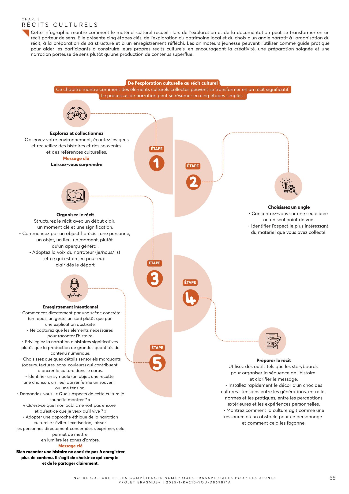
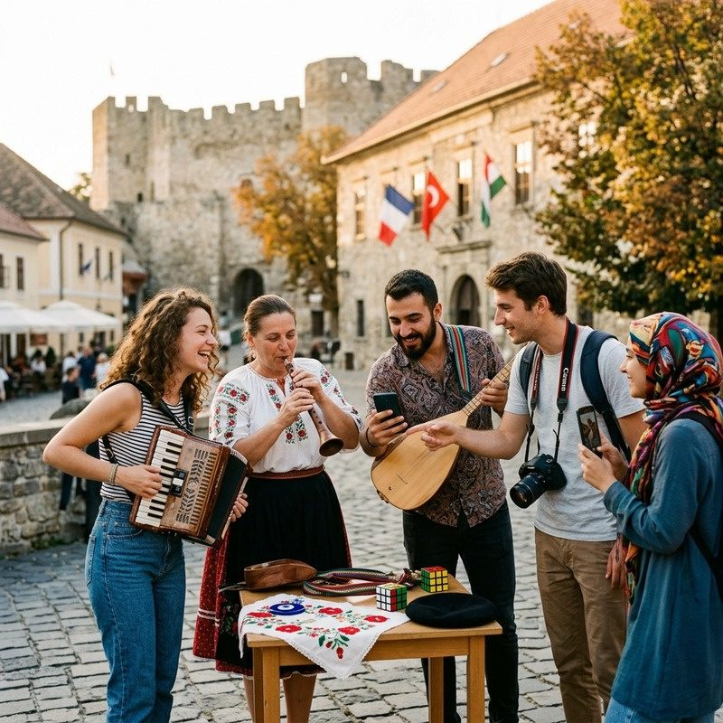
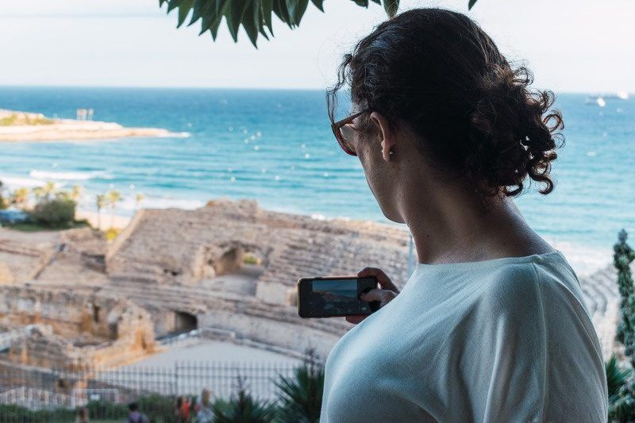
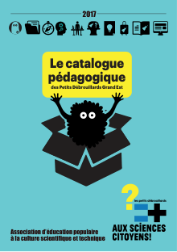

R É S U M É I N F O G R A P H I Q U E

Résumé visuel du chapitre : cliquez pour agrandir ou télécharger.
Télécharger l’infographie (PDF)Introduction

Dans le chapitre 2, les jeunes ont exploré la culture en observant leur environnement, en interrogeant les gens et en recueillant des histoires, des souvenirs et des connaissances locales. L’étape suivante consiste à transformer ces informations en récits significatifs. Ce chapitre présente le récit culturel comme moyen d’organiser et de partager les expériences culturelles. Le récit aide les jeunes à passer de la simple collecte d’informations à la création d’histoires compréhensibles, auxquelles d’autres peuvent s’identifier et sur lesquelles ils peuvent réfléchir. Dans le cadre de l’animation jeunesse, le récit permet aux participants de donner du sens à leurs découvertes. En sélectionnant les éléments importants, en choisissant un point de vue et en structurant un récit, les jeunes apprennent à rendre le patrimoine culturel visible et accessible. À ce stade, les participants peuvent déjà réfléchir à leur public cible et à un format possible, car ces choix peuvent influencer la structure du récit. Ce chapitre porte sur le processus créatif et narratif, et non sur la production technique. Il aide les animateurs jeunesse à guider les participants pour répondre à des questions telles que :
- Quelle histoire voulons-nous raconter ?
- Pourquoi est-ce important ?
- À qui la racontons-nous ?
- Quel est le meilleur angle d’approche ?
Grâce à des méthodes pratiques et des ateliers, les participants apprennent à transformer des documents culturels collectés en récits qui peuvent ensuite être adaptés à différents formats médiatiques tels que des podcasts, des blogs, des vidéos courtes ou des expositions numériques. Ainsi, la narration devient le pont entre l’exploration culturelle (chapitre 2) et la production médiatique (chapitre 4).
DigComp 3.0 : lien avec le chapitre
Ce chapitre contribue principalement au domaine « Création de contenus numériques », en aidant les jeunes à sélectionner, structurer et préparer des contenus culturels pour une communication porteuse de sens.
Objectifs d’apprentissage
À la fin de ce chapitre, les animateurs jeunesse seront capables de :
- comprendre la narration comme un moyen d’organiser et d’interpréter les expériences culturelles ;
- transformer le matériel culturel collecté en récits clairs ;
- aider les participants à identifier un angle d’attaque, un message et un public pertinents ;
- introduire des méthodes de narration simples adaptées à l’éducation non formelle ;
- préparer les participants à adapter leurs récits en formats numériques dans le chapitre suivant.
Sections
- Section 1 | Le pouvoir de la narration
- Section 2 | Élaboration d’un récit culturel
- Section 3 | Les principes clés d’une narration culturelle efficace
- Section 4 | Ateliers pratiques, études de cas et pratiques inspirantes
Section 1 · Le pouvoir de la narration
Le récit au service de l’autonomisation des jeunes
Pourquoi la narration est importante dans le travail auprès des jeunes
Les récits sont l’un des plus anciens moyens par lesquels les humains partagent leurs connaissances, leurs expériences et leurs valeurs. Grâce aux histoires, on explique le passé, on décrit le présent et on imagine l’avenir. L’art de raconter des histoires implique aussi de faire des choix et d’interpréter la réalité. Les animateurs jeunesse devraient encourager les participants à réfléchir à leur point de vue, à ce qu’ils choisissent de montrer et à ce qui reste invisible. Dans le travail auprès des jeunes, le récit joue un rôle important car il leur permet d’exprimer leurs propres points de vue et expériences. Il les aide également à relier leurs histoires personnelles à leur patrimoine culturel collectif. Lorsque les jeunes apprennent à raconter des histoires, ils développent des compétences importantes telles que :
- exprimer des idées et des émotions ;
- écouter différents points de vue ;
- interpréter les expériences culturelles ;
- communiquer avec différents publics ;
- développer la confiance en sa propre voix. Le récit n’est donc pas seulement un outil de communication.
C’est aussi un processus de réflexion et d’émancipation.
Le récit comme traduction culturelle
Quand les jeunes racontent une histoire culturelle, ils ne se contentent pas de répéter des informations. Ils sélectionnent ce qui est significatif et le présentent de manière à ce que les autres puissent le comprendre. En ce sens, la narration peut être considérée comme une forme de traduction culturelle. Les participants interprètent les pratiques culturelles, les souvenirs et les expériences et les traduisent en récits compréhensibles par les autres. C’est particulièrement important lorsqu’on travaille sur des sujets tels que :
- les traditions locales ;
- les souvenirs de famille ;
- les histoires de quartier ;
- les expériences communautaires ;
- les pratiques culturelles quotidiennes.
À travers le récit, la culture devient quelque chose qui peut être partagé, discuté et compris au-delà du contexte original.
Du matériel culturel au récit
Au chapitre 2, les participants ont recueilli des données culturelles par l’observation, des entretiens et l’exploration. Ces données peuvent inclure :
- des histoires personnelles ;
- des souvenirs partagés par les membres de la communauté ;
- des photographies, des sons ou des objets ;
- des observations des pratiques culturelles quotidiennes ;
- des informations trouvées dans les archives ou les sources en ligne.
Cependant, la collecte de données ne se transforme pas automatiquement en récit. Le récit commence lorsque les participants commencent à :
- choisir ce qui est important ;
- organiser l’information ;
- définir un objectif clair ;
- donner un sens à ce qu’ils ont découvert.
Ce processus transforme l’information culturelle en un récit que d’autres peuvent suivre et auquel ils peuvent s’identifier.

Section 2 · Élaboration d’un récit culturel
Construction narrative
1. Choisir un angle clair
L’un des défis les plus courants dans l’art de raconter des histoires est que les participants essaient de parler de trop de choses à la fois. En revanche, un récit culturel fort se concentre généralement sur une idée ou une perspective principale. C’est ce qu’on appelle l’angle du récit. Cet angle permet de répondre à des questions telles que :
- Quel est l’aspect le plus intéressant de cette histoire ?
- Que voulons-nous que le public comprenne ?
- Qu’est-ce qui rend cette histoire significative ou unique ?
Par exemple : Au lieu de raconter une histoire générale sur un quartier, les participants pourraient se concentrer sur :
- comment une rue a évolué au fil du temps ;
- l’histoire d’un magasin de quartier que tout le monde connaît ;
- un lieu où les jeunes se rencontrent généralement ;
- une tradition qui perdure encore aujourd’hui. En recentrant le récit, l’histoire devient plus concrète et plus captivante.
2. Identification du public cible et de l’objectif
Avant de raconter une histoire, il est utile de réfléchir à qui elle est destinée. Une histoire racontée aux habitants d’une région peut être différente d’une histoire créée pour des jeunes d’un autre pays.
Les participants peuvent réfléchir à des questions telles que :
- Qui écoutera ou lira cette histoire ?
- Que voulons-nous qu’ils comprennent ou ressentent ?
- Qu’est-ce qui pourrait être nouveau ou surprenant pour eux ?
Préciser le public cible aide les participants à choisir les informations à inclure et la manière de les présenter. Par exemple, lorsqu’ils partagent des récits culturels locaux avec un public international, il peut être nécessaire d’expliquer certaines traditions ou références déjà connues des locaux.
3. Structurer le récit
Même une histoire simple bénéficie d’une structure de base. Les participants n’ont pas besoin de maîtriser des théories complexes en matière de narration. Une structure narrative simple suffit souvent.
Un récit culturel peut être organisé en quatre étapes :
Début - Contexte
- Présentez le lieu, la personne ou la situation.
- Aidez le public à comprendre où se déroule l’histoire.
Objectif - De quoi parle cette histoire ?
- Présentez l’élément central de l’histoire : une personne, un lieu, un objet ou un souvenir.
Développement - Que se passe-t-il ou que découvre-t-on ?
- Partagez des observations, des souvenirs ou des expériences qui révèlent un aspect intéressant de la culture explorée.
Signification - Pourquoi cette histoire est-elle importante ?
- Expliquez ce que cette histoire nous apprend sur la communauté, la culture ou l’expérience partagée.
Cette structure aide les participants à organiser leurs idées et à éviter de perdre l’attention du public.
4. Révéler le visible et l’invisible
L’un des atouts du récit culturel est sa capacité à passer de ce que l’on voit facilement à ce qui est moins visible mais tout aussi important. De nombreux récits culturels commencent par un élément tangible, tel que :
- un lieu ;
- un plat traditionnel ;
- un objet ;
- une fête locale ;
- une routine quotidienne.
Cependant, derrière ces éléments visibles se cachent souvent des significations plus profondes :
- souvenirs ;
- valeurs ;
- identités qui évoluent au fil du temps ;
- histoires cachées au sein de la communauté.
Encourager les participants à explorer les aspects visibles et invisibles de la culture contribue à créer des récits plus riches et plus significatifs.
5. Préparer le récit pour différents formats
À ce stade, les participants n’ont pas encore besoin de décider précisément de la manière dont leur histoire sera produite. Cependant, il peut être utile de commencer à réfléchir à cette question : quel format pourrait être le plus adapté à l’histoire ?
Certaines histoires sont particulièrement efficaces lorsqu’elles sont racontées par la voix et le son, notamment lorsque des interviews, des souvenirs ou des conversations y occupent une place centrale. D’autres récits peuvent tirer profit d’images ou de mouvements, par exemple lorsque les lieux, les gestes ou les détails visuels jouent un rôle important. Certaines histoires peuvent aussi bien fonctionner sous forme de récits écrits, surtout lorsque la réflexion et l’explication sont importantes.
L’objectif de cette réflexion n’est pas de prendre une décision définitive à ce stade, mais d’aider les participants à comprendre que différentes histoires peuvent nécessiter différentes formes d’expression.
Le chapitre 3 explore comment ces histoires peuvent être développées en formats médiatiques concrets tels que les podcasts et les blogs.
Section 3 · Les principes clés d’une narration culturelle efficace
L’art de raconter des histoires ne se résume pas à la créativité. Il s’agit aussi d’organiser ses idées et de faire des choix. Cette section est théorique et la suivante traduit les concepts en ateliers pratiques. Pour les jeunes participants, la difficulté ne réside souvent pas dans le manque d’histoires, mais dans la sélection de celles à raconter et dans la manière de les présenter. Les animateurs jeunesse peuvent accompagner ce processus en proposant des méthodes narratives simples qui aident les participants à transformer leurs idées brutes en un récit cohérent. Les approches suivantes sont faciles à mettre en œuvre dans le cadre du travail auprès des jeunes et ne nécessitent aucune expertise technique.
1. Partir d’expériences réelles
Le récit culturel prend tout son sens lorsqu’il s’enracine dans des expériences et des observations réelles. Les participants devraient être encouragés à construire leurs récits à partir de :
- entretiens menés auprès des membres de la communauté ;
- observations faites lors d’explorations locales ;
- souvenirs personnels ou traditions familiales ;
- pratiques culturelles quotidiennes ;
- objets, lieux ou sons porteurs de sens.
Le fait de partir d’expériences réelles contribue à rendre les récits authentiques et proches du vécu de chacun. Les animateurs jeunesse peuvent rappeler aux participants que raconter des histoires ne nécessite pas d’événements extraordinaires. Très souvent, des récits culturels significatifs émergent de situations ordinaires.
2. La narration culturelle doit être éthique
La narration éthique consiste à raconter des histoires de manière consciente et responsable. Elle garantit que les individus et les groupes sont représentés avec respect, sans réduire leur complexité à des clichés ou des stéréotypes. Elle intègre la notion de consentement, assurant ainsi que les histoires partagées - en particulier celles inspirées de faits réels - le sont avec l’accord des personnes concernées. Cette approche nous invite à questionner notre point de vue et la manière dont nos récits influencent la perception d’autrui. Elle encourage les jeunes à partager leurs histoires pour créer des liens, comprendre et célébrer la diversité des expériences, plutôt que d’exclure ou de juger.

3. Concentrez-vous sur les détails concrets
Les récits deviennent captivants lorsqu’ils incluent des détails précis. Au lieu de s’exprimer en termes généraux, les participants devraient être encouragés à décrire :
- un lieu précis ;
- un moment particulier ;
- un geste ou une action ;
- un objet ou un symbole ;
- un souvenir personnel.
Par exemple, au lieu de dire : « Les habitants de notre ville célèbrent de nombreuses traditions », les participants pourraient décrire : « Chaque année, le premier dimanche du printemps, les familles se réunissent sur la place du village pour partager des plats faits maison. » Les détails concrets aident le public à visualiser l’histoire et à s’y identifier.
4. Sélectionnez ce qui compte le plus
Lors de la collecte d’informations, les participants accumulent souvent plus de données qu’ils ne peuvent en utiliser. Cette approche favorise également des pratiques numériques responsables en limitant les enregistrements inutiles et en privilégiant les contenus pertinents. La sélection constitue donc une étape clé de la narration.
Les animateurs jeunesse peuvent aider les participants à identifier :
- le moment le plus intéressant ;
- la citation la plus marquante d’une interview ;
- l’élément qui représente le mieux l’histoire culturelle.
Une question utile à se poser est : « Si nous ne pouvions retenir que trois éléments de tout ce que nous avons collecté, quels seraient-ils ? » Cela aide les participants à se concentrer sur les aspects essentiels de l’histoire.
5. Organisez visuellement l’histoire à l’aide d’un storyboard.
Un storyboard est un outil simple qui aide les participants à organiser leur histoire étape par étape. Au lieu d’écrire l’histoire entière d’un seul coup, ils créent une séquence visuelle des éléments principaux.
Un storyboard de base peut inclure : Le début - introduction du contexte ou du lieu L’objectif principal est de présenter la personne, l’objet ou la situation centrale. Le moment clé - la découverte ou le souvenir le plus intéressant La signification - ce que cette histoire nous apprend sur la culture ou la communauté
Les storyboards aident les participants à :
- structurer leurs idées ;
- identifier les éléments manquants ;
- organiser le déroulement du récit.
Ils facilitent également l’adaptation ultérieure de l’histoire à différents formats tels que podcasts ou blogs.
6. Relier les histoires personnelles à la culture au sens large
Un récit culturel fort relie souvent les expériences individuelles à une signification collective.
Les participants peuvent réfléchir à des questions telles que :
- Que révèle cette histoire sur notre communauté ?
- Ce récit s’inscrit-il dans une tradition ou une pratique culturelle plus large ?
- Comment cette histoire relie-t-elle le passé et le présent ?
Encourager les participants à passer de l’expérience personnelle à l’expérience culturelle. Le sens contribue à créer des histoires à la fois personnelles et pertinentes pour les autres.
Section 4 · Ateliers pratiques, études de cas et pratiques inspirantes
Les ateliers suivants aident les participants à passer de la collecte de matériel culturel à la narration structurée. Les activités sont conçues pour des contextes d’éducation non formelle et peuvent être adaptées en fonction de la taille du groupe, du temps disponible et de l’expérience des participants.
Les ateliers suivent une approche progressive :
- 1. Comprendre ce qui rend une histoire captivante
- 2. Choisir un angle
- 3. Structurer le récit
- 4. Rédiger un court récit culturel
Les animateurs jeunesse peuvent choisir d’organiser ces activités lors d’un seul atelier ou sur plusieurs séances. Le récit est à la base des formats de narration numérique tels que les podcasts, les blogs ou les récits vidéo, qui seront explorés dans le chapitre suivant.

4.1. Étude de cas 1 - Méthode inspirante
Contexte
Le projet Rembobinez a été conçu pour aider les participants à analyser un film documentaire. Le travail avec les jeunes a été réalisé sur la base d’un jeu de cartes présentant chacun une question pour analyser les différents aspects du film. Les animatrices et le professeur de français amenaient les jeunes à réfléchir à la notion de regard porté à travers le film en travaillant aussi sur l’émotion, le ressenti. Les ateliers avaient pour finalité à la fois l’éducation à l’image, mais aussi de créer un espace de valorisation de la parole des jeunes. Ils ont également constitué un espace de développement de l’esprit critique.
Fonctionnement de la méthode
Les participants travaillent avec un jeu de cartes contenant des questions relatives à un film ou à des archives audiovisuelles. Les questions invitent les participants à explorer différents aspects de la narration, tels que :
- des souvenirs personnels liés à une image ou à un lieu ;
- les émotions ou impressions déclenchées par une scène ;
- les liens entre le passé et le présent ;
- différentes interprétations d’un même matériel culturel.
Les cartes servent de point de départ à la conversation, encourageant le dialogue et la narration collective. Par la discussion, les participants commencent à identifier des récits significatifs qui pourront ensuite être développés en histoires culturelles.
Pourquoi cette méthode fonctionne bien avec les jeunes
Cette approche encourage la participation active et la pluralité des points de vue. Au lieu de proposer une interprétation unique, l’activité invite les jeunes à :
- exprimer leurs propres idées et expériences ;
- écouter différents points de vue ;
- explorer le patrimoine culturel par la discussion ;
- développer la pensée narrative.
En interagissant avec des images et des questions, les participants passent progressivement de l’observation à l’interprétation et à la narration.
Ce que les animateurs jeunesse peuvent retenir de cet exemple
Cette étude de cas montre que la narration peut s’amorcer grâce à des outils d’animation simples. Les animateurs jeunesse peuvent utiliser des approches similaires pour aider les participants à explorer le patrimoine culturel, par exemple en utilisant :
- des fiches de discussion ;
- des photographies ou des images d’archives ;
- des objets liés à la culture locale ;
- des souvenirs personnels partagés par les membres de la communauté.
Ces outils permettent aux participants d’identifier plus facilement des histoires pertinentes avant de produire du contenu médiatique.
Lien avec ce chapitre
Cette méthode illustre une étape importante de la narration culturelle : interpréter et analyser le matériel culturel avant de le transformer en récit. Il aide les participants à identifier des histoires qui pourront ensuite être développées en podcasts, blogs ou autres formats de narration numérique explorés dans les chapitres suivants.
4.2. Étude de cas 2 - Des objets aux histoires : une méthode de narration participative
Cette approche s’inspire des pratiques culturelles participatives développées en France, notamment celles mises en œuvre par le Musée national de l’histoire de l’immigration, ainsi que par des organisations d’éducation populaire telles que Les Petits Débrouillards et le CEMEA, qui utilisent des objets, des récits personnels et l’expression collective comme outils d’apprentissage et de narration.

Le catalogue pédagogique des Petits Débrouillards (PDF)www.lespetitsdebrouillardsgrandest.org/IMG/pdf/catalogues_pedagogique_ge.pdf- CEMEA – Culture et pratiques artistiquescemea.asso.fr/les-champs-d-action/culture-et-pratiques-artistiques
- Musée national de l’histoire de l’immigration – Ressourceswww.histoire-immigration.fr/ressources
Contexte
Cette étude de cas s’inspire des pratiques culturelles participatives développées en France, notamment des approches utilisées dans des institutions telles que le Musée national de l’histoire de l’immigration, où des objets personnels sont utilisés pour raconter des histoires de migration. S’appuyant sur cette approche, les jeunes participants sont invités à créer des objets symboliques ou « totems » représentant des aspects de leur identité culturelle, de leur histoire familiale ou de leurs expériences vécues. Chaque objet devient un support narratif, permettant aux participants d’exprimer leur histoire de manière tangible et visuelle.
Objectifs d’apprentissage
Comprendre comment les objets peuvent véhiculer une signification culturelle et personnelle. Développer des compétences narratives à travers la représentation symbolique. Réfléchir à l’identité, à la mémoire et au patrimoine culturel. Renforcer la confiance en soi pour partager des histoires personnelles ou collectives. Relier les expériences individuelles à des récits sociaux et culturels plus larges.
Activités et résultats
Les participants commencent par explorer des exemples d’objets utilisés dans les musées pour raconter des histoires personnelles ou migratoires. Ensuite, ils :
- réfléchissent à leur propre bagage culturel, à leurs souvenirs ou à leurs expériences ;
- sélectionnent ou créent des objets représentant les aspects clés de leur histoire ;
- assemblent ces éléments en un totem personnel ou collectif, puis présentent et expliquent leur objet au groupe.
Il en résulte une série d’artefacts visuels et narratifs, chacun représentant une histoire culturelle unique.
Contenu et approche méthodologique
Cette approche combine exploration culturelle, pensée symbolique et narration. Les participants passent par :
- la réflexion (Quelle partie de mon histoire ?) ;
- la sélection (Quels éléments la représentent ?) ;
- la représentation (Comment puis-je la représenter à travers un objet ?) ;
- la narration (Comment expliquer sa signification ?).
Cette méthode permet à la narration d’émerger à travers l’expression verbale et non verbale, la rendant accessible à des groupes divers.
Groupe cible
Groupes de jeunes (15 à 30 ans) dans des contextes d’éducation non formelle. Participants issus de divers milieux culturels ou migratoires
Éléments clés de la culture numérique et médiatique
Comprendre comment les histoires peuvent être communiquées à travers différents formats (pas seulement le texte ou l’oral). Développer des compétences narratives avant la production numérique. Réfléchir à la manière dont les récits culturels sont représentés et partagés. Préparer du contenu pouvant être adapté ultérieurement en formats numériques (podcasts, blogs, vidéos courtes).
Impact
- Confiance accrue dans l’expression de l’identité personnelle et culturelle.
- Lien plus fort entre les histoires individuelles et le patrimoine collectif.
- Développement des compétences narratives et de communication.
- Cohésion de groupe renforcée grâce aux récits partagés.
- Meilleure compréhension de la diversité culturelle et des perspectives multiples.
Pourquoi c’est important pour notre culture
Cette approche reflète un principe clé du projet Ourculture : À partir d’expériences vécues, construire des récits culturels significatifs. En utilisant des objets comme outils narratifs, les participants apprennent que les histoires n’existent pas seulement sous forme numérique, mais qu’elles peuvent d’abord être pensées, façonnées et incarnées.
Cette méthode prépare également les participants aux prochaines étapes du guide :
- production de médias (Chapitre 4) ;
- partage des histoires de manière responsable (Chapitre 5).
Cela renforce l’idée que la narration numérique commence par l’intention, le sens et la réflexion, et non par la technologie.
De la narration à la création de médias
Dans ce chapitre, les participants ont appris à transformer des éléments culturels en récits significatifs. Grâce à des techniques de narration et à des ateliers pratiques, les jeunes ont exploré comment :
- identifier les éléments les plus importants d’un récit culturel ;
- choisir un angle narratif clair ;
- organiser les informations en un récit structuré ;
- préparer un récit avant de produire du contenu médiatique.
Toutes les histoires n’ont pas besoin d’être des productions complexes. Les histoires simples et bien préparées sont souvent les plus percutantes. Ce processus est essentiel car une narration numérique efficace repose sur des idées claires et une préparation minutieuse.
Une fois que les participants ont élaboré un récit clair, ils peuvent commencer à réfléchir à la manière de le partager. Le chapitre suivant explore comment ces récits peuvent être transformés en formats numériques, tels que les podcasts et les blogs.
Les participants y apprennent à produire et à partager leurs histoires tout en continuant d’appliquer les principes présentés dans ce guide : narration significative, accessibilité et utilisation responsable des outils numériques.
Grâce à ces pratiques, les jeunes peuvent utiliser les médias numériques non seulement pour communiquer, mais aussi pour préserver le patrimoine culturel, exprimer leurs points de vue et contribuer à la mémoire de leurs communautés.